Schermate da acquisire
Questi SVG preparano la stesura del manuale. Non sono schermate dell’applicazione: sostituirli con catture reali prima della verifica finale.
43 pagine · 408 segnaposto · originali finali 1920 × 1080, scala 1
tutorials/come-assegnare-i-tag-agli-atleti.mdx
tutorials/come-creare-moduli-iscrizione-personalizzati.mdx
faq/come-si-crea-un-socio.mdx
docs/corsi.mdx
Course list view.SVG provvisorio · 1920 × 1080Course creation form.SVG provvisorio · 1920 × 1080Course detail with enrolled athletes.SVG provvisorio · 1920 × 1080Screenshot da acquisire: Manuale d’usoSVG provvisorio · 1920 × 1080Screenshot da acquisire: Manuale d’usoSVG provvisorio · 1920 × 1080Screenshot da acquisire: Manuale d’usoSVG provvisorio · 1920 × 1080Screenshot da acquisire: Manuale d’usoSVG provvisorio · 1920 × 1080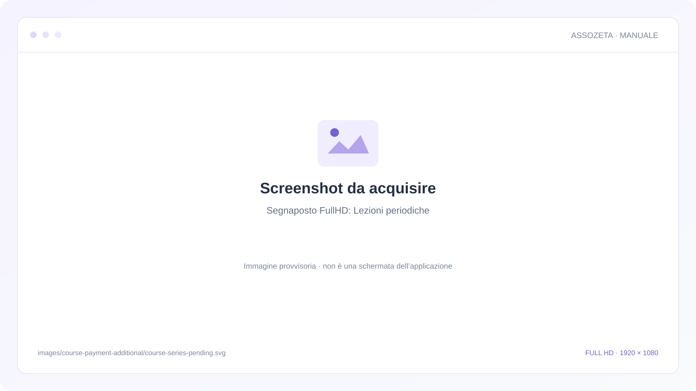
Segnaposto FullHD: Lezioni periodicheSVG provvisorio · 1920 × 1080Corso Standard: tre rate da 100 euro, scadenze e alternativa da 280 euro.SVG provvisorio · 1920 × 1080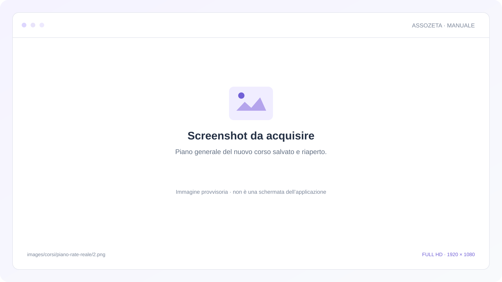
Piano generale del nuovo corso salvato e riaperto.SVG provvisorio · 1920 × 1080Generatore in creazione: tre importi differenti e scadenze corrette, totale 300 euro.SVG provvisorio · 1920 × 1080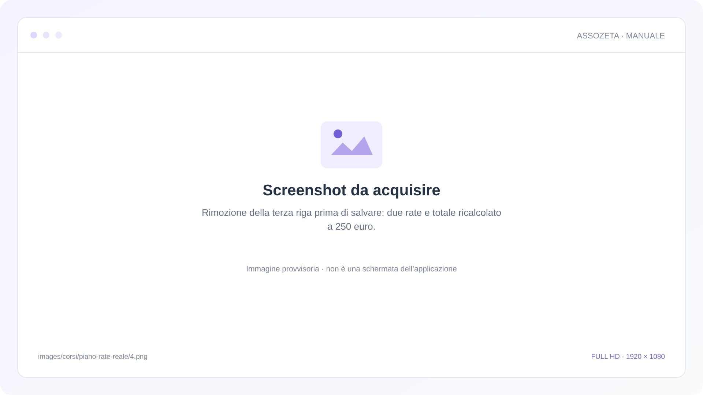
Rimozione della terza riga prima di salvare: due rate e totale ricalcolato a 250 euro.SVG provvisorio · 1920 × 1080Nuovo piano da 150 e 100 euro con date conservate dopo salvataggio e riapertura.SVG provvisorio · 1920 × 1080Editor della scheda corso: importi distinti 150, 100 e 50 euro.SVG provvisorio · 1920 × 1080Importi distinti e scadenze conservati dopo la ricarica.SVG provvisorio · 1920 × 1080Iscrizione di Giulia e Luca: selezione esplicita anche della rata con data passata.SVG provvisorio · 1920 × 1080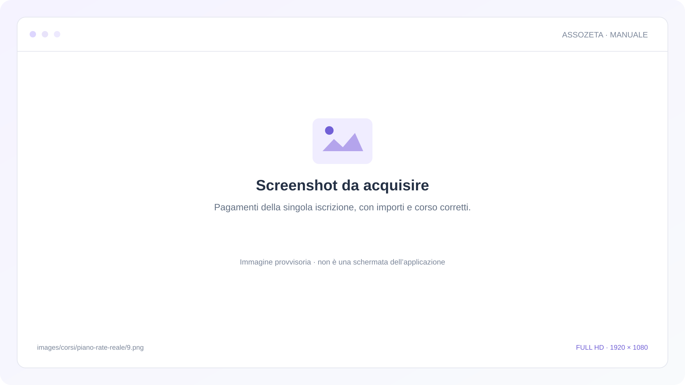
Pagamenti della singola iscrizione, con importi e corso corretti.SVG provvisorio · 1920 × 1080Iscrizione di Giulia riaperta: tre rate assegnate con scadenze e importi corretti.SVG provvisorio · 1920 × 1080Modifica del Piano rate della sola Giulia, senza intervenire sull’iscrizione di Luca.SVG provvisorio · 1920 × 1080Selezione individuale salvata e riaperta; pagamenti già collegati conservati.SVG provvisorio · 1920 × 1080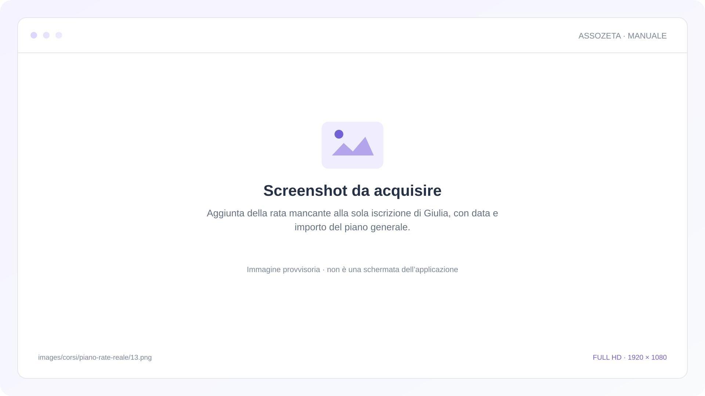
Aggiunta della rata mancante alla sola iscrizione di Giulia, con data e importo del piano generale.SVG provvisorio · 1920 × 1080Tre rate nella singola iscrizione dopo la riapertura; importi già registrati conservati.SVG provvisorio · 1920 × 1080Nuovo pagamento della rata aggiunta e quote già collegate da 100 e 50 euro.SVG provvisorio · 1920 × 1080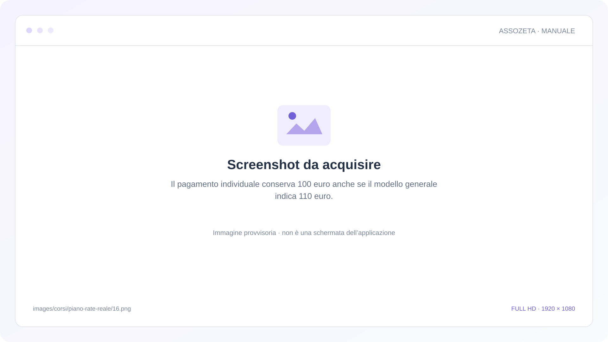
Il pagamento individuale conserva 100 euro anche se il modello generale indica 110 euro.SVG provvisorio · 1920 × 1080Conferma Assegna piano rate per una sola iscrizione.SVG provvisorio · 1920 × 1080Riassegnazione ordinaria: due rate non precedenti all’iscrizione.SVG provvisorio · 1920 × 1080Conferma Assegna piano rate completo per una sola iscrizione.SVG provvisorio · 1920 × 1080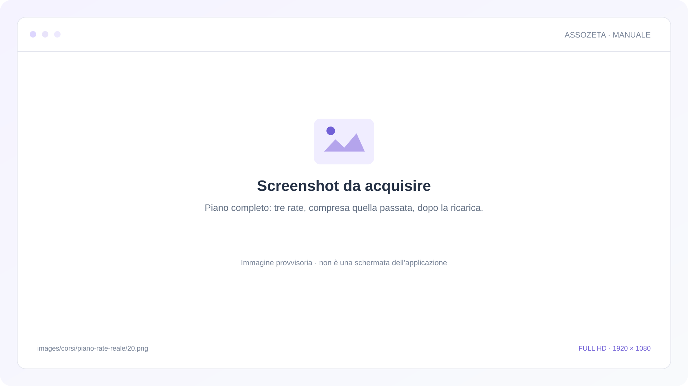
Piano completo: tre rate, compresa quella passata, dopo la ricarica.SVG provvisorio · 1920 × 1080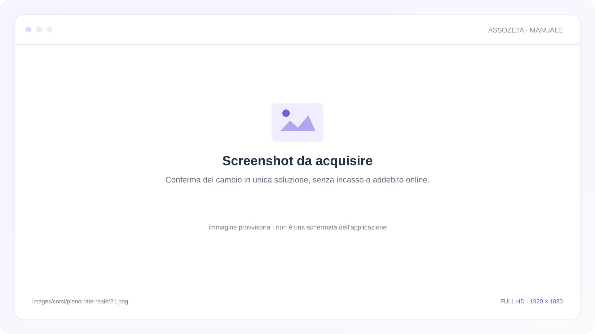
Conferma del cambio in unica soluzione, senza incasso o addebito online.SVG provvisorio · 1920 × 1080Giulia ha la quota unica da 280 euro; Luca mantiene le sue tre rate.SVG provvisorio · 1920 × 1080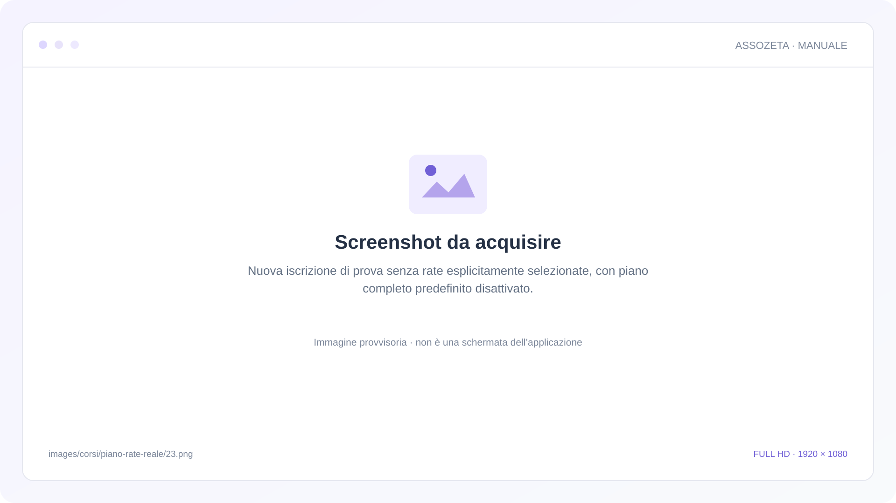
Nuova iscrizione di prova senza rate esplicitamente selezionate, con piano completo predefinito disattivato.SVG provvisorio · 1920 × 1080Piano predefinito ordinario: le due scadenze future salvate e riaperte.SVG provvisorio · 1920 × 1080Profilo, Generali: impostazione del piano rate completo prima della modifica.SVG provvisorio · 1920 × 1080Assegna piano rate completo di default abilitato, prima di Salva.SVG provvisorio · 1920 × 1080Impostazione del piano completo salvata e riaperta; iscrizioni esistenti conservate.SVG provvisorio · 1920 × 1080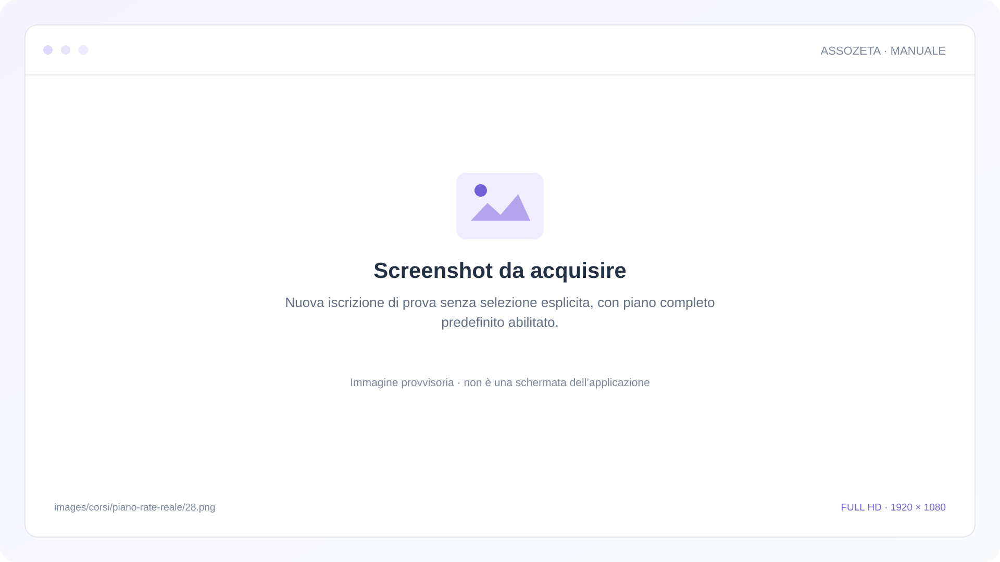
Nuova iscrizione di prova senza selezione esplicita, con piano completo predefinito abilitato.SVG provvisorio · 1920 × 1080Piano completo predefinito: tre rate conservate, compresa la scadenza precedente all’iscrizione.SVG provvisorio · 1920 × 1080Tre pagamenti reali della nuova iscrizione di prova, ancora da incassare.SVG provvisorio · 1920 × 1080Impostazione originale ripristinata; i piani già assegnati mantengono le proprie rate.SVG provvisorio · 1920 × 1080 docs/registro-presenze.mdx
docs/pagamenti.mdx
Payments list view.SVG provvisorio · 1920 × 1080Payment creation form.SVG provvisorio · 1920 × 1080Payment detail with installments.SVG provvisorio · 1920 × 1080Screenshot da acquisire: Manuale d’usoSVG provvisorio · 1920 × 1080Screenshot da acquisire: Manuale d’usoSVG provvisorio · 1920 × 1080Screenshot da acquisire: Manuale d’usoSVG provvisorio · 1920 × 1080Screenshot da acquisire: Manuale d’usoSVG provvisorio · 1920 × 1080Screenshot da acquisire: Manuale d’usoSVG provvisorio · 1920 × 1080Screenshot da acquisire: Manuale d’usoSVG provvisorio · 1920 × 1080Tre quote associative: importi, stati e date prima delle esportazioni.SVG provvisorio · 1920 × 1080CSV e Excel dall’inizio, distinti dalla ricerca corrente.SVG provvisorio · 1920 × 1080Ricerca di Sara Conti: una sola quota nell’ambito corrente.SVG provvisorio · 1920 × 1080Prima nota: dall’inizio, mese corrente, mese scorso e periodo selezionato.SVG provvisorio · 1920 × 1080Download reali completati: la ricerca resta visibile e le quote sono invariate.SVG provvisorio · 1920 × 1080Collaboratore in lettura: ricerca di Sara ed esportazione corrente autorizzata.SVG provvisorio · 1920 × 1080Scelte delle colonne Pagamenti prima della modifica di Metodo.SVG provvisorio · 1920 × 1080Metodo nascosto nella tabella, con le quote ancora presenti.SVG provvisorio · 1920 × 1080Metodo rimane nascosto dopo riapertura e ricaricamento della pagina.SVG provvisorio · 1920 × 1080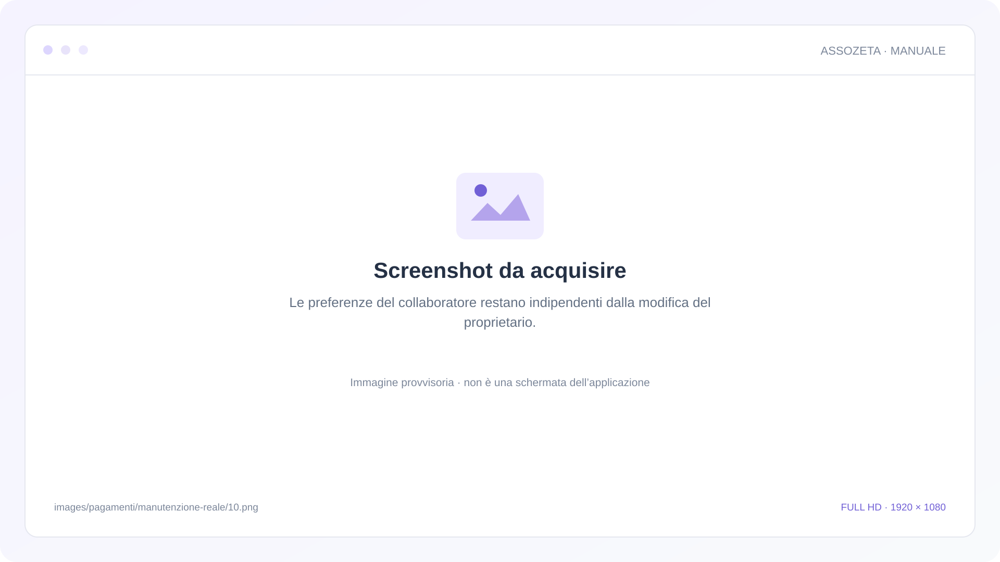
Le preferenze del collaboratore restano indipendenti dalla modifica del proprietario.SVG provvisorio · 1920 × 1080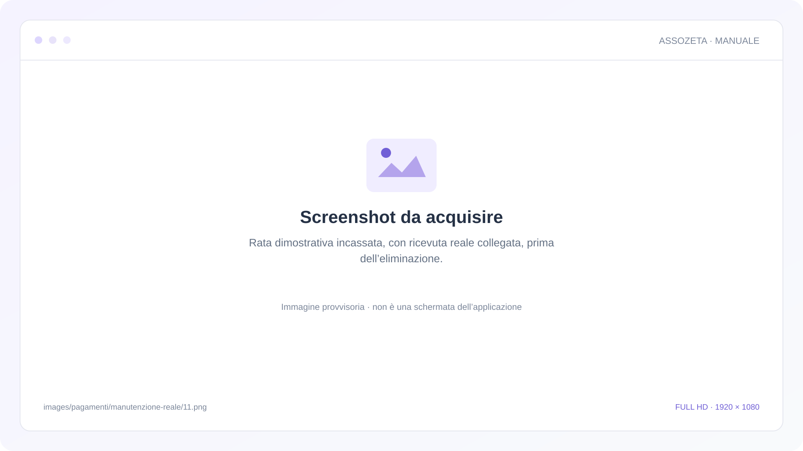
Rata dimostrativa incassata, con ricevuta reale collegata, prima dell’eliminazione.SVG provvisorio · 1920 × 1080Conferma dell’eliminazione singola, prima di scegliere Annulla.SVG provvisorio · 1920 × 1080Seconda conferma della rata corretta, prima di scegliere Elimina.SVG provvisorio · 1920 × 1080La quota eliminata non compare dopo il ricaricamento; le altre quote sono conservate.SVG provvisorio · 1920 × 1080Ricevuta della rata eliminata indicata come annullata nell’elenco.SVG provvisorio · 1920 × 1080PDF reale rigenerato dopo l’annullamento, senza collegamenti o token di condivisione.SVG provvisorio · 1920 × 1080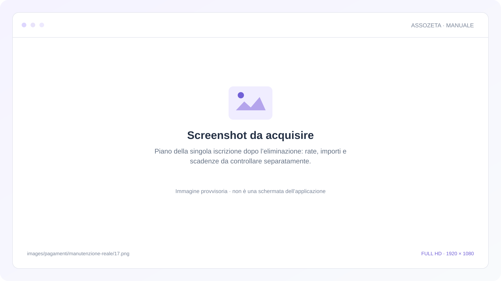
Piano della singola iscrizione dopo l’eliminazione: rate, importi e scadenze da controllare separatamente.SVG provvisorio · 1920 × 1080 docs/contabilita-avanzata.mdx
faq/come-inviare-email-nuovi-iscritti.mdx
faq/come-si-importano-dei-soci.mdx
faq/come-condividere-il-link-iscrizioni.mdx
faq/come-gestire-i-certificati-medici.mdx
faq/come-configurare-i-pagamenti-online.mdx
faq/come-stampare-tessere-atleti.mdx
faq/come-generare-bilancio.mdx
faq/come-usare-ricerca-filtri-atleti.mdx
faq/come-archiviare-dati.mdx
faq/come-calcolare-generare-codici-fiscali.mdx
faq/come-invitare-collaboratori.mdx
faq/come-cambiare-anno-sportivo-fiscale.mdx
faq/come-collegare-google-calendar.mdx
faq/come-abilitare-autenticazione-due-fattori.mdx
tutorials/come-gestire-registro-presenze-carnet.mdx
tutorials/come-esportare-dati-associazione.mdx
tutorials/come-impostare-pagamenti-rateizzati.mdx
tutorials/come-gestire-certificati-medici.mdx
tutorials/come-impostare-gestire-istruttori.mdx
tutorials/come-impostare-stripe-pagamenti-online.mdx
tutorials/come-impostare-automazioni-workflow.mdx
Schermate pianificate dai flussi